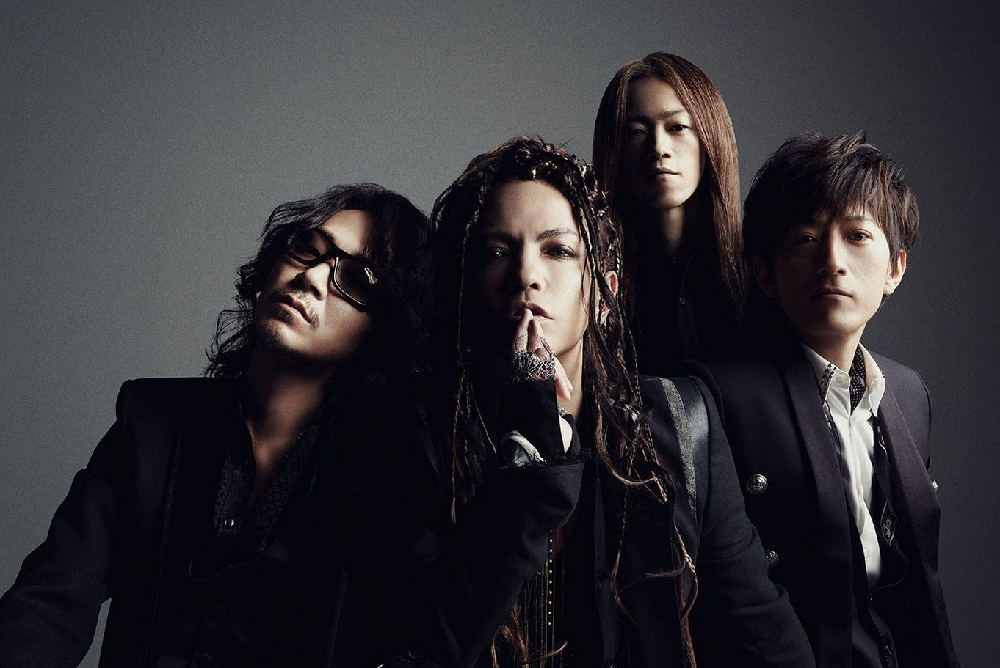

Musique

🌸 Quelques morceaux à écouter 🌸
Ici se trouve une liste de quelques musiques de L'Arc~en~Ciel. Pour chacune d'elles, il suffit de cliquer sur l'image pour atterir sur la page dédiée, où se trouvent alors les paroles ainsi que leur transcription en rōmaji accompagnées d'une vidéo de la musique concernée.
Petite précision supplémentaire :
les paroles chantées lors des lives peuvent être légèrement différentes, car HYDE réinterprète souvent les chansons durant les concerts et improvise parfois~ 😌
")
")